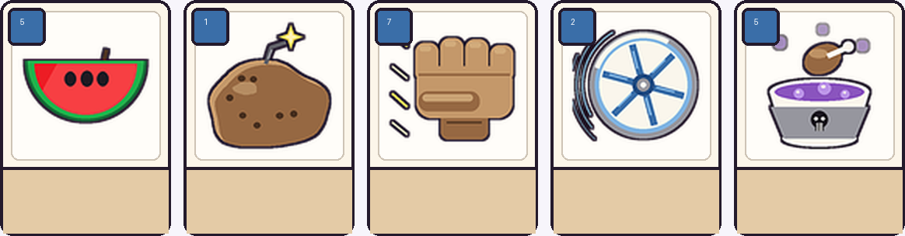
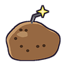
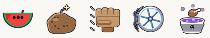

风格按你说的来：平涂色块 + 深色描边 + 简洁几何。但把你手绘里"不够准"的地方补齐了 ——
线条用 4 倍超采样画的（边缘平滑不毛）、比例调到主体占 70%、加了一档高光和一档暗部（不做渐变）。
五个类别各一张：回复 / 控制 / 攻击 / 防御 / 状态 —— 能看出整套的风格方向。



| 项目 | 规格 |
|---|---|
| 画布 | 96×96，透明底 PNG |
| 主体占比 | 约 70%（四周留 9% 边距） |
| 描边 | 统一深色 #241A2C，粗细一致 |
| 颜色 | 每个色相 3 档（暗/中/亮），平涂不用渐变 |
| 明暗 | 只加"一档高光 + 一档暗部"，光源固定在左上 |
| 文件大小 | 6~13 KB / 张 |
| 牌 | 状态 |
|---|---|
| 西瓜 | 可以了 —— 红瓤在上、绿皮在下、三颗籽、小梗，跟你原稿一致 |
| 飞轮 | 可以了 —— 金属轮 + 6 根辐条 + 轴心 + 三道速度弧线 |
| 毒鸡汤 | 可以了 —— 碗 + 紫汤 + 气泡 + 骷髅 + 鸡腿 + 毒气 |
| 土豆地雷 | 还行 —— 土豆本体、芽眼、引线、火花都有；但左上那块浅色高光有点"斑"的感觉，要不要再调淡 |
| 一拳 | 还行 —— 改了三版才读得出"拳头"；现在手指偏短，可能有点像"手掌挡住"，可以再调 |
你先看这 5 张，告诉我：
① 风格对不对？（平涂 + 描边 + 一点明暗）
② 有没有哪张特别不满意，我改
③ 确认之后我继续画剩下的 55 张（每张大概 10~20 分钟）
④ 或者你先画几张自己的，我对比着调风格